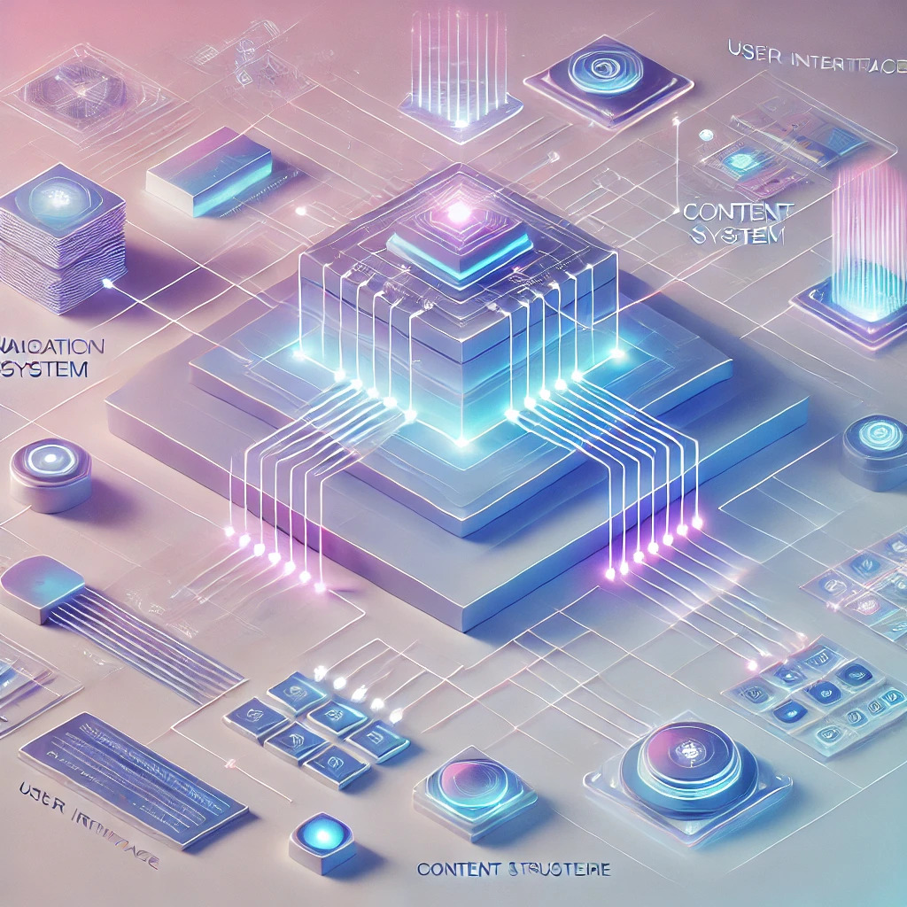
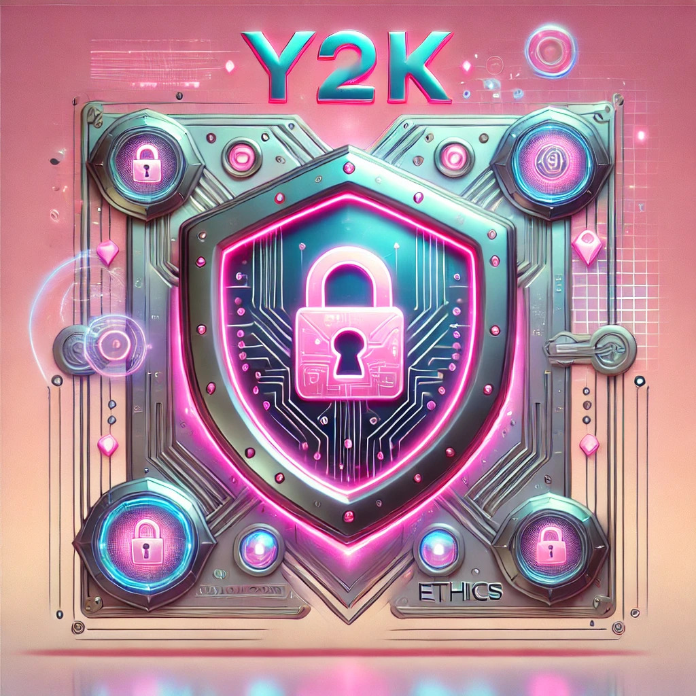

Incorporating Systems Design, Information Architecture, UX, and Security & Ethics
At our company, we prioritize the integration of systems design, information architecture (IA), user experience (UX), and security and ethics across all aspects of our DevOps practices. These factors are crucial to building reliable, scalable, and user-friendly products. Systems design creates the structure for efficient development, IA organizes data so users can access it intuitively, UX ensures products are easy to use and engaging, while security and ethics safeguard user data and ensure compliance with industry standards. Together, they form the foundation of our work, allowing us to deliver products that meet the highest technical, user-centered, and ethical standards. We advocate for these practices because they not only improve our products but also establish trust with our users and ensure our continued success in a rapidly evolving digital landscape.
Systems Design
Systems design involves creating the structure, architecture, and components of software systems to ensure efficiency, scalability, and maintainability. It allows developers to streamline processes, eliminate unnecessary components, and enhance security and user experience. Proper systems design enables software systems to be built quickly and efficiently while maintaining high standards for performance and reliability.
“System design enables developers to identify and eliminate unnecessary components and processes, create software systems quickly and easily, and improve the security, scalability, user experience, and maintenance of the software system” (GeeksforGeeks, 2022).
Information Architecture

Information architecture determines how data is structured, organized, and navigated within a system, ensuring users can find and use the information they need efficiently. A strong IA design reduces cognitive load and supports the user journey by making content easily accessible. Effective IA is especially important in complex digital environments, as it aids in scalability and ensures that data remains organized as systems grow and evolve.
“Information architecture (IA) is a key aspect of UX design that focuses on organizing information, structuring websites and mobile apps, and helping users navigate them to find and process the information they need” (Morville, 2016).
User Experience (UX)
User experience is all about ensuring users can interact easily, intuitively, and with satisfaction with the system. A good UX design minimizes friction points and provides seamless interactions, enhancing overall customer satisfaction. By prioritizing user-centered design principles, we ensure our systems are both effective and engaging, which in turn leads to higher user retention and loyalty.
“User experience helps users create connections while promoting inclusivity. An example is accommodating users with physical limitations, such as reading small text” (Interaction Design Foundation, 2016).
Security and Ethics

Security and ethics are foundational to building trust and ensuring compliance. By incorporating security from the start, we protect against data breaches and ensure that our products meet privacy regulations. Ethical practices ensure transparency in how we handle user data and how our systems impact users. This commitment to security and ethics fosters long-term trust with our users.
“Companies worldwide are projected to spend $219 billion on cybersecurity in 2023, and by 2026, annual cybersecurity expenditures are projected to rise to $300 billion” (University of Tulsa, 2023).
Conclusion
As a lead architect, I advocate for the integration of systems design, information architecture, UX, and security and ethics because these factors ensure that we are building not only functional but also user-friendly and secure products. By prioritizing these elements in our development cycle, we ensure that our systems are scalable, efficient, and user-centric, while also safeguarding user data and adhering to ethical standards. These priorities are integral to creating products that stand the test of time in an ever-evolving digital landscape.